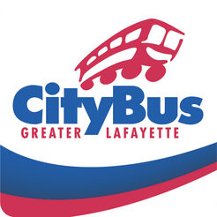

CityBus
CityBus is rolling out MyRide, a new GPS-based bus location sysetm.
Using MyRide, riders can access transit schedules and real-time GPS-based
bus location information, track their bus on a map, and receiev transit news
and route-specific alerts.
When the MyRide app is downloaded ona rider's phone, geolocation determines
the closest bus stops to their location. And with one screen-tap, riders can view
estimated departure times for the next buses and routes servicing these stops.
By selecting a favorite location or route, or entering a starting point
and destination, riders can get real-time GPS-based information for all
possible bus options. A trip planner can also make future transit plans.
Riders can track the location, estimated departure time and passenger load of
the selected bus on an interactive map powered by Google.
From their customer account, riders can subscribe to receive text, email
or push-notifications containing bus departure information, including
one-time or recurring notifications for specific routes, days and times.
Another feature identifies detoured routes and temporary stops.
CityBus can also post news stories about weather, detours, or community
events, publish route-specific or general news, or add pictures or video
content.
Riders without data plans can get real-time information as well by
texting a designated phone number. After inputting their stop number,
the system will automatically return estimated departure times for the
next buses.